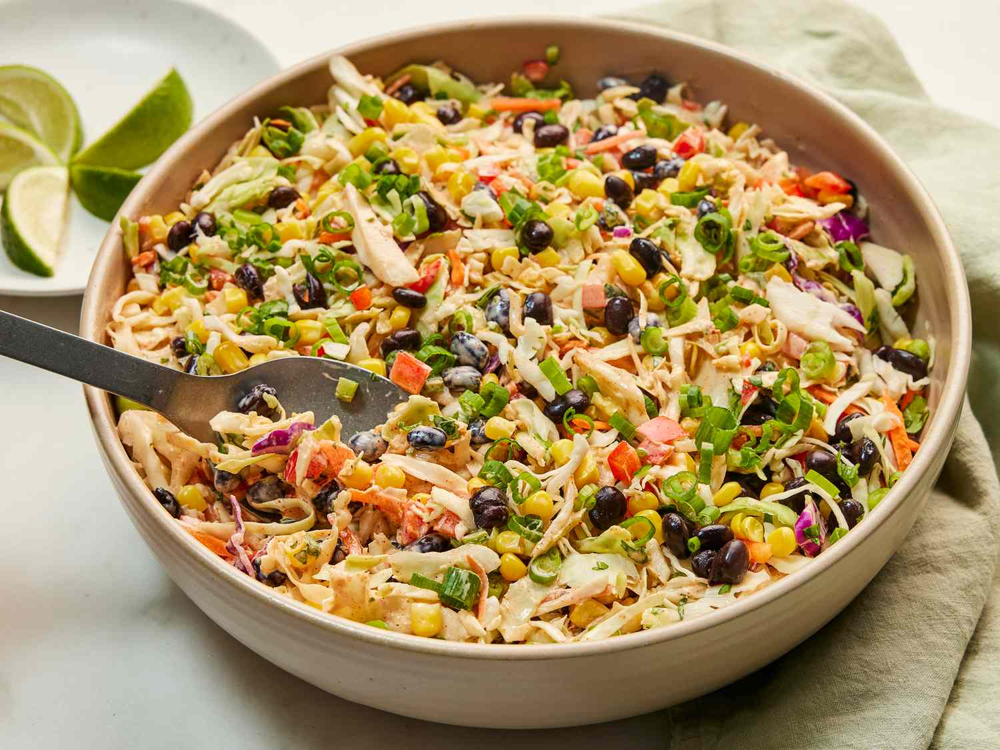

Cowboy Coleslow

Much like its cousin, Cowboy Caviar, this southwestern-style
slaw combines crisp corn, bright peppers, and hearty black
beans for a colorful, crave-worthy summer side. It’s creamy,
spicy, and tangy, and it’s ready for the potluck in just 15
minutes.
“Easy summer side salad to bring together in a hurry,” said
recipe developer Amanda Stanfield.
Ingredients
- 1 (16-ounce) package shredded coleslaw mix
- 1 1/2 cups frozen corn, thawed and drained, divided (from 1[10-ounce] bag)
- 1 cup finely chopped red bell pepper
- 1/2 cup fresh cilantro, finely chopped
- 1/4 cup seeded and finely chopped jalapeno chile
- 1/2 cup mayonnaise
- 1/2 cup sour cream
- 1/4 cup fresh lime juice
Steps
- Gather all ingredients.
- In a large bowl, toss coleslaw mix, black beans, corn,
red bell pepper, cilantro, and jalapeno until well
combined.
- Whisk together mayonnaise, sour cream, lime juice,
adobo sauce, taco seasoning mix, salt, cumin, and paprika
until smooth and evenly combined.
- Pour dressing over prepared coleslaw mixture. Toss until
well combined.